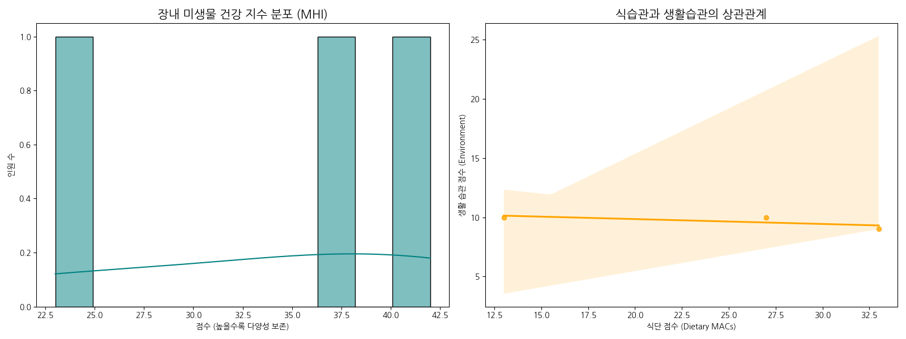
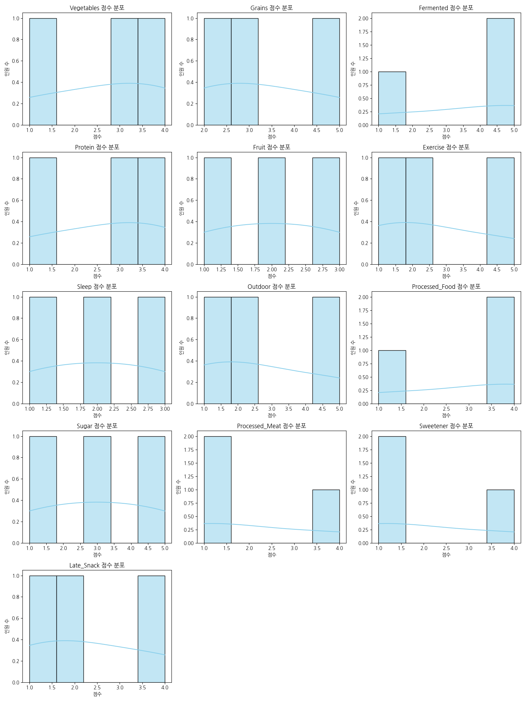

==================================================
[ 마이크로바이옴 설문 분석 결과 보고서 ]
==================================================
▶ 총 참여 인원: 3명
▶ 평균 건강 지수: 34.0 / 65
▶ 우리 집단의 미생물 건강 등급: C (미생물 다양성 위기)
--------------------------------------------------
▶ [가장 우수한 항목]: Fermented
▶ [가장 취약한 항목]: Fruit
--------------------------------------------------
▶ 『10퍼센트 인간』 관점의 조언:
- 현대적 질병의 위협에 노출되어 있습니다. 가공식품을 줄이고 섬유질(MACs) 섭취를 늘려야 합니다.
--------------------------------------------------
▶ 『10퍼센트 인간』에서 말하는 마이크로바이옴:
- 우리 몸은 인간 세포 10%와 미생물 세포 90%로 구성되어 있다고 합니다. 이때 미생물 세포 90%에 해당하는 것이 바로 마이크로바이옴입니다.
- 이 책은 우리의 건강이 마이크로바이옴(장내 미생물 생태계)의 다양성과 건강성에 크게 좌우된다는 점을 강조합니다.
- 건강한 마이크로바이옴은 면역력 증진, 소화 기능 개선, 영양분 흡수, 심지어 뇌 기능에도 긍정적인 영향을 미치며, 질병 예방에 중요한 역할을 합니다.
- 반대로 마이크로바이옴의 불균형은 다양한 만성 질환과 관련이 있습니다.
==================================================


---
이 보고서는 Google Colab에서 생성되었습니다.